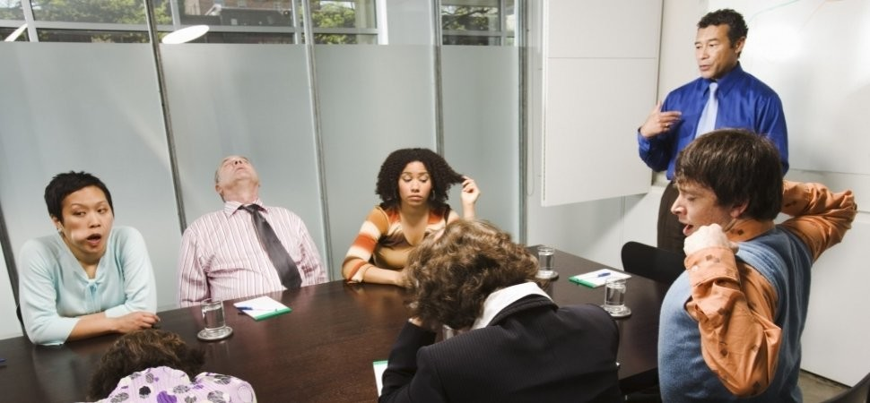

On This Page:
Unequal Participation Within Groups
Introduction
Even when collaboration tools are equally available to all members, equality doesn't automatically follow. Group dynamics are deeply influenced by social hierarchies, confidence levels, cultural backgrounds, and personality types. The result? A small number of dominant voices shape decisions, while the majority stay silent — not because they have nothing to contribute, but because the environment doesn't make space for them.
Did You Know? Research shows that in group settings, the top 20% of participants often contribute 80% of the conversation, leaving the rest unheard.
The Loudest Voice Problem
Why dominant voices take over
In most group settings, whether in classrooms, workplaces, or online platforms, a pattern emerges where a few individuals consistently lead, speak, and decide. This isn't always about knowledge or skill. It's about:
- Confidence
- Social status
- Familiarity with tools
- Cultural norms
The rest of the group gradually disengages, assuming their input isn't valued or needed. This creates a cycle where the loudest voices become even louder, and quieter voices fade away completely.

Who Gets Left Behind?
The profiles of underrepresented group members
Unequal participation doesn't affect everyone equally. Certain people are consistently more likely to be sidelined:
- Introverts
- Minority group members
- Non-native speakers
- Students with anxiety
- Remote or asynchronous participants
Each of these groups brings valuable perspective, but traditional group formats make it hard for them to be heard. When we lose these voices, we lose diverse ideas and solutions.
The Cost of Unequal Participation
What we lose when voices are missing
This isn't just a fairness issue, it's a quality issue. When groups don't hear from everyone:
- Decisions are poorer
- Innovation suffers
- Members disengage
- Inequality deepens
Research consistently shows that the most effective teams are those where participation is balanced and psychological safety is high. When everyone feels safe to speak, teams perform better and create better solutions.
How ALIGN Addresses This
The platform solution
ALIGN is designed from the ground up to counteract unequal participation:
- Anonymous input options - Share ideas without fear of judgment
- Equal turn structures - Everyone gets a chance to speak
- Async collaboration - Participate when you're most comfortable
- Visibility tools - Ensure all contributions are seen
- Inclusive design - Built for diverse needs and abilities
By building fairness into the tool itself, ALIGN doesn't rely on individuals to police their own behaviour , it creates the conditions for equal participation by default.
Unequal participation is one of the most invisible forms of inequality , it happens in every group, every day, and most people don't even notice it. ALIGN exists to change that. Because real collaboration only happens when every voice is not just present, but genuinely heard.
Reducing unequal participation is essential for achieving SDG 10: Reduced Inequalities. When everyone has an equal opportunity to contribute, we create better solutions, stronger communities, and a more equitable world.
 Back to Home Page
Back to Home Page